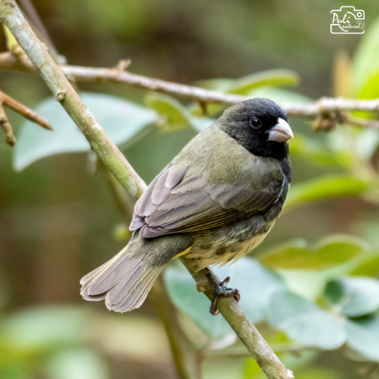
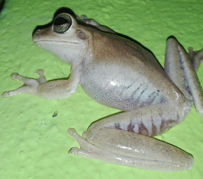
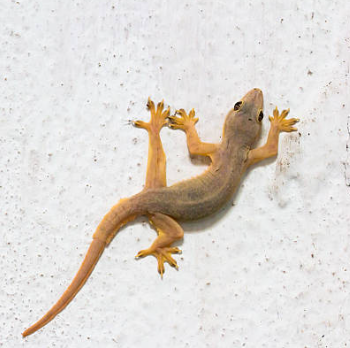
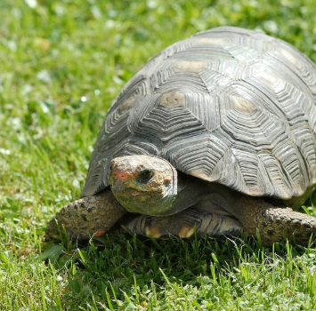
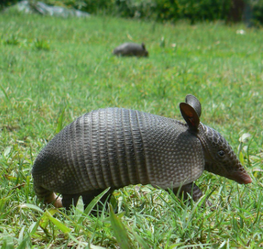
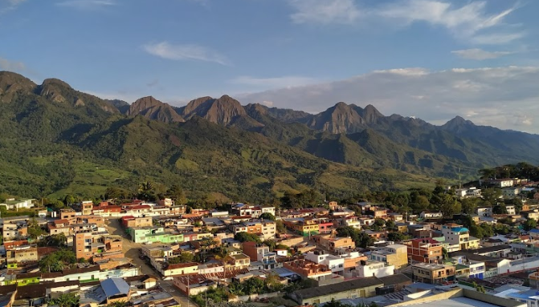
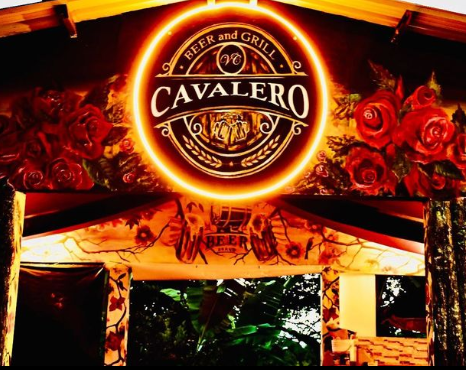
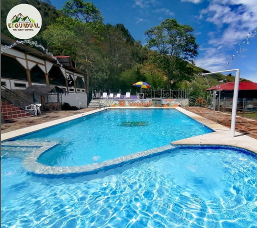
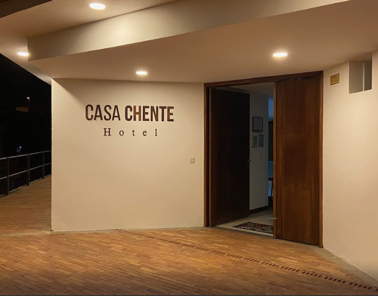
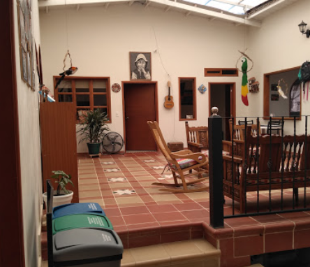

Somos
PajariAndo
Aqui conseguiras información sobre temas como Flora, Fauna, Hospedajes y sitios por visitar en nuestro territorio, proximamente a nivel nacional
Avistamiento de Especies





Alojamientos, restaurantes y demás




